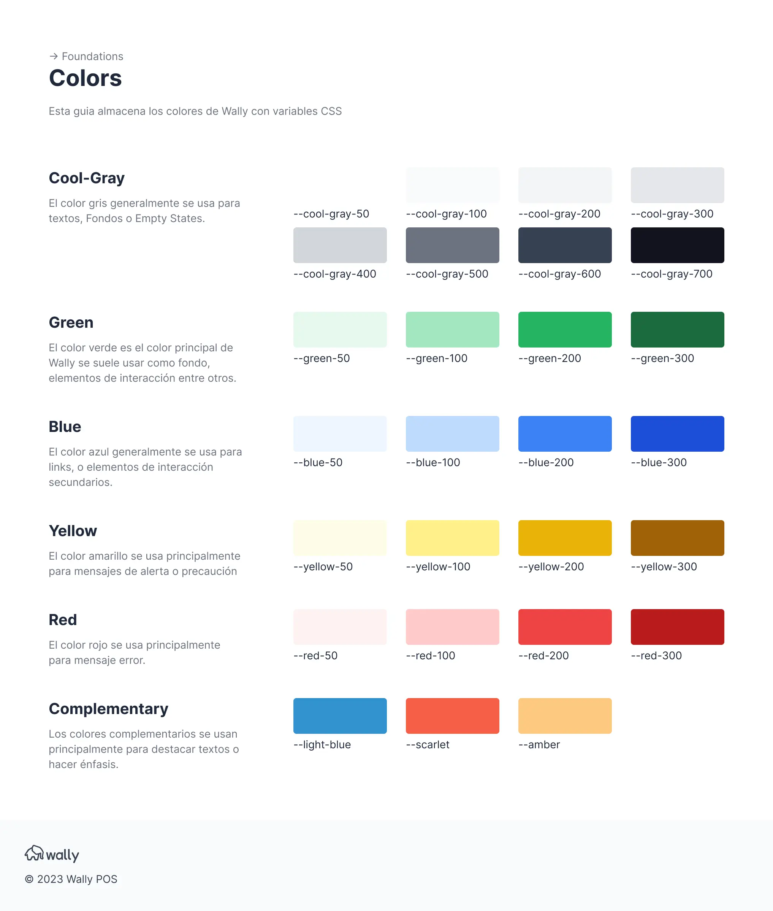

Colores
Tailwind
Los colores de Wally también se encuentran disponibles en Tailwind.
¿Cómo aplicar los colores?
Fondos
Con Tailwind es mucho más sencillo aplicar los colores a un elemento, ya que se generan de forma automática.
Para fondos, solo tienes que agregar bg antes del nombre del color, Ejemplo: bg-cool-gray-50
<header class="bg-cool-gray-50"></header>
Color
Para aplicar el color sobre un texto solo tienes que anteponer las siglas text antes del nombre del color, ejm: text-cool-gray-600
<p class="text-cool-gray-600">Parrafo</p>